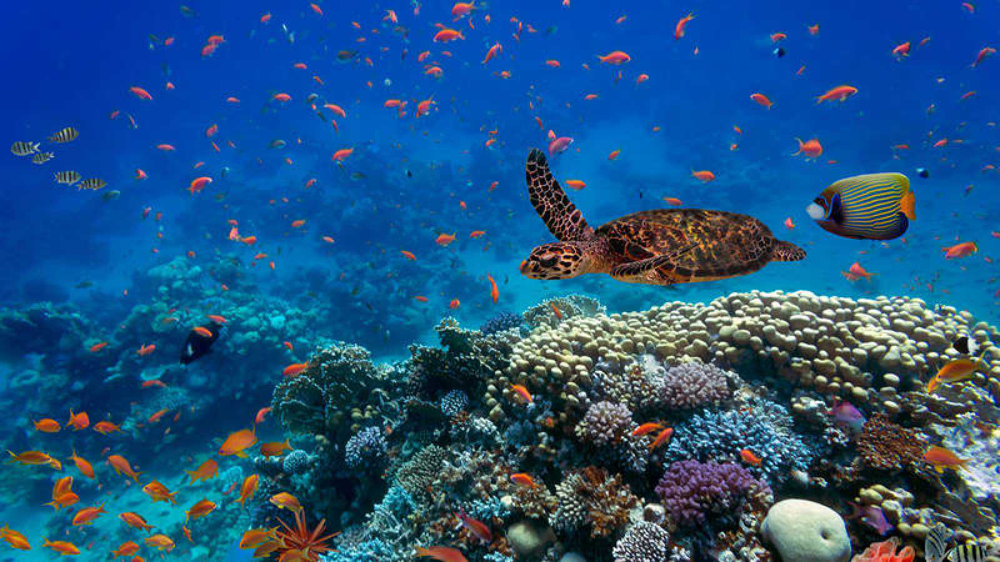
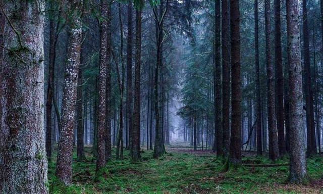
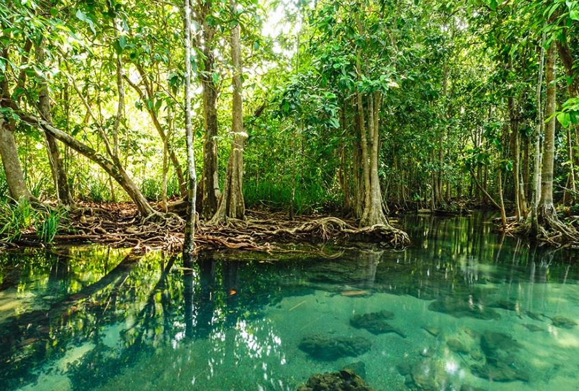
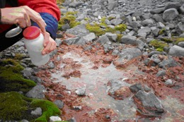
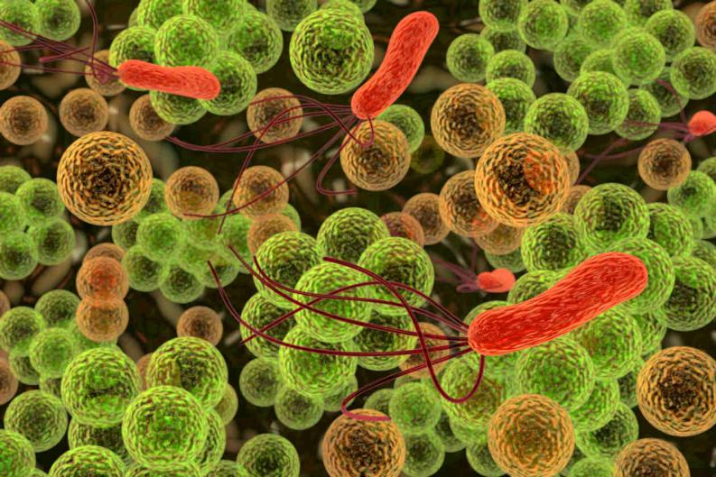
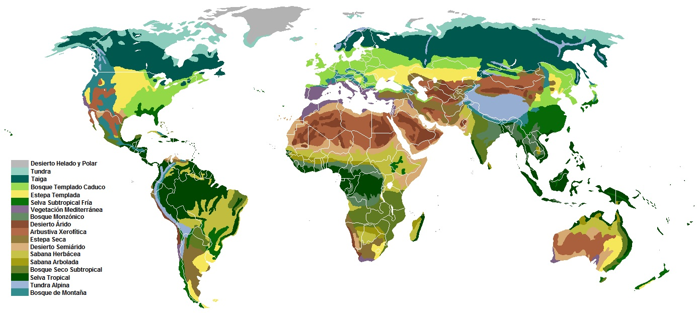

TIPOS DE ECOSISTEMAS
ECOSISTEMAS ACUATICOS
Los ecosistemas acuáticos incluyen las aguas de los océanos y las aguas continentales dulces o saladas.
Cada uno de estos cuerpos de agua tiene estructuras y propiedades físicas particulares con relación a la luz,
la temperatura, las olas, las corrientes y la composición química, así como diferentes tipos de organizaciones
ecológicas y de distribución de los organismos.
Ecosistema marino
La oceanografía se ocupa del estudio de estos ecosistemas. Pueden ser de dos tipos dependiendo de la luz solar que reciben:
• Fótico: Cuando recibe luz suficiente para la fotosíntesis, lo que sucede hasta los 200 m de profundidad.
Ejemplos de ecosistemas de este tipo son el de playa o costero, el de plataforma continental, de mar abierto,
arrecife de coral, laguna de atolón, desembocadura de río, etc.16
• Afótico: Donde no llega la luz suficiente para la fotosíntesis. Como en el mar poco profundo, mar profundo,
abisal, fosa oceánica y la mayor parte del fondo marino.
Ecosistema de agua dulce
La limnología se ocupa del estudio de los ecosistemas de ríos y lagos. En este grupo no sólo se consideran los ecosistemas de agua corriente (medios
loticos) y los de agua quieta (medios lenticos), sino también los hábitats acuosos de manantiales, huecos de árboles e incluso las cavidades de plantas
donde se acumula agua y los ambientes de aguas subterráneas.
Animales y plantas que se pueden encontrar en estos lugares:
| ANIMALES | PLANTAS |
| Ballena gris | Cianofíceas (algas azules) |
| Esponjas marinas | Feofíceas (algas pardas) |
| Pez damisela | Rodofita |
| Erizos | Cianobacteria |
| Espongiarios | Dinoflagelada |

Conoce mas sobre los ecosistemas Acuaticos...
ECOSISTEMAS TERRESTRES
Son aquellos en los que la flora y fauna se desarrollan en el suelo o subsuelo. Dependen de la humedad, temperatura, altitud y latitud, de tal
manera que los ecosistemas biológicamente más ricos y diversos se encuentra a mayor humedad, mayor temperatura, menor altitud y menor latitud.
Los ecosistemas pueden clasificarse según el tipo de vegetación, encontrando la mayor biodiversidad en los bosques, y esta va disminuyendo en los
matorrales, herbazales, hasta llegar al desierto. Según la densidad de la vegetación predominante, pueden ser abiertos o cerrados. Entre los
principales ecosistemas terrestres tenemos:
Bosques
Los ecosistemas forestales o bosques conforman la mayor masa de biósfera terrestre. Pueden ser:
• Bosque de frondosas o bosques de hoja ancha: Formados mayormente por angiospermas (árboles con floración).
• Selva: Ecosistemas con la mayor densidad biológica, mayor precipitación y de vegetación perennifolia. El clima determina diversos tipos: Según la latitud y temperatura puede ser selva tropical o subtropical, según la estacionalidad y humedad es selva lluviosa o monzónica y según la altitud es selva montaña o basal. Son de gran complejidad, el dosel arbóreo y el sotobosque se consideran sub-ecosistemas marcadamente diferenciados. La selva más extensa y diversificada es la selva ecuatorial, que es de tipo tropical-lluviosa-basal.
• Bosque seco: Bosques tropicales y subtropicales con una estación seca larga y una lluviosa breve, por lo que abunda la vegetación xerófila y caducifolia.
• Bosque templado de frondosas: En zonas menos húmedas se desarrolla el bosque mediterráneo y el bosque caducifolio; en regiones más húmedas está el bosque laurifolio o selva templada.
• Bosque de coníferas o bosque de hoja acicular: Formados principalmente por gimnospermas como las coníferas.
• Taiga o bosque boreal: Bosques de mayor extensión pero de menor biodiversidad. Tiene unos 4 meses de estación favorable. El suelo presenta líquenes y musgo.
• Bosque templado de coníferas: Bosques de pino, cedro, abeto y secoya, entre otros, que se encuentran entre los más altos del mundo.
• Bosque subtropical de coníferas: Bosques subhúmedos, principalmente de pino.
Matorrales
Los ecosistemas arbustivos o matorrales son aquellos que tienen plantas de menor porte como los arbustos y matas. Pueden ser:
• Arbusto: Según la región y el tipo de arbustos recibe diversas denominaciones tales como chaparral, matorral mediterráneo, brezal, jaral y fynbos.
• Xerófilo: El matorral xerófilo se compone principalmente por espinos como cactus y bromelia en regiones semidesérticas.
• Páramo: Son matorrales de montaña, cuyos arbustos suelen llamarse frailejones. Son ecosistemas húmedos de gran altitud y latitud ecuatorial propios de América, África y Nueva Guinea.
Herbazales
Los ecosistemas herbáceos o herbazales son aquellos con predominio de hierbas (gramíneas) y suelen estar en medios semiáridos con clima estacional.
Pueden ser:
• Pradera: De clima templado y verde la mayor parte del año por predominio de la estación húmeda. Son transformados con facilidad en terrenos agrícolas.
• Estepa: De clima templado a frío y de color amarillento la mayor parte del año por predominio del clima árido continental.
• Sabana: De clima tropical y subtropical, suele limitar con la selva. Su estacionalidad conduce a los hábitos migratorios de la fauna. La ausencia o presencia irregular de arbustos o árboles da lugar a los ecosistemas de sabana herbácea, sabana arbustiva y sabana boscosa o arbolada.
• Pradera alpina: También llamada pradera de montaña, tundra alpina o herbazal de montaña. Son ecosistemas de gran altitud. En los Andes (región puna) destacan los pajonales. Se encuentra también en los Alpes, el Tíbet y otros.
Tundra
La tundra está conformada por musgos, líquenes, hierbas y pequeños arbustos, por lo que en realidad es un ecosistema húmedo definido por la
ausencia de árboles y que presenta el subsuelo congelado. Se encuentran entre la taiga y las nieves perpetuas. La tundra ártica tiene gran extensión,
en la antártica son áreas pequeñas y la tundra alpina se define mejor como pradera de montaña.
Desierto
Desierto propiamente dicho: Poseen flora y fauna muy escasa. Son típicos de los climas subtropicales, aunque también pueden encontrarse en
zonas tropicales, templadas, frías y en montaña.
• Indlandsis: Es la capa de hielo o desierto polar. El ecosistema tiene más desarrollo en las costas o bordes del hielo.
Ecosistema de Paisaje modificado
Es el ecosistema no natural con control o intervención del ser humano.
• Medio urbano.
• Medios rurales de explotación como los campos de cultivo, crianza, minas, tala, etc.
• Ecosistemas artificiales y seminaturales: Como la creación de bosques, estanques, introducción de nuevas especies, abandono de campos de cultivo, desertificación, etc
Animales y plantas que se pueden encontrar en estos lugares:
| ANIMALES | PLANTAS |
| Leones | Bromelias |
| Ardillas | Palmeras |
| Conejos | Orquídeas |
| Zorros | Helechos |
| Oso Panda | Baobab |

Conoce mas sobre los ecosistemas Terrestres...
ECOSISTEMA HIBRIDO
Es el ecosistema inundable o humedal como el pantano o ciénaga, el cual es considerado según sea el caso, un ecosistema terrestre o acuático, o más
cercanamente, un híbrido entre ellos. Son suelos cubiertos de agua dulce o salada, permanentemente o durante gran parte del año, encontrándose comúnmente
en las llanuras aluviales. Dependiendo de sus características presentan plantas acuáticas, herbáceas, árboles, helechos, algas y una fauna adaptada a este
hábitat. Algunos ecosistemas de este tipo:
• Sabana inundada: Llanura aluvial de sabana. El Pantanal en el centro sudamericano, como el mayor humedal del mundo.
• Selva inundable: Llanura aluvial selvática como la várzea y agapós de Brasil, o los aguajales y bajiales del Perú.
• Pantano de coníferas: Formado en llanuras pobladas de árboles y arbustos.
• Manglar: Ecosistema costero tropical de mangles.
• Marisma: Humedal herbáceo en las proximidades del mar.
• Juncal: Ecosistema ribereño de juncos junto a lagos o ríos.
• Estero: Pantano formado en las proximidades de ríos o lagos, formado por plantas acuáticas o palmeras y diversa vegetación.
• Turbera: Humedal formado por turba en tundras y taigas, compuesto por musgos y acumulación de materia vegetal muerta.
• Bofedal: Humedal herbáceo de alta montaña.
Animales y plantas que se pueden encontrar en estos lugares:
| ANIMALES | PLANTAS |
| Flamingos | Mangle negro |
| Serpientes | Mangle blanco |
| Peces | Lianas |
| Cocodrilos | Helechos |
| Tortugas | Palmeras |

Conoce mas sobre los ecosistemas Hibridos...
ECOSISTEMA MICROBIANO
Dentro de la microbiología igualmente podemos describir sistemas compuestos de organismos microbianos interdependientes que comparten un mismo hábitat. Entre ellos
destacan:
• las microbiotas: que están conformadas por un conjunto de microorganismos que se localizan de manera normal en distintos sitios del cuerpo de los seres vivos pluricelulares, como por ejemplo en el ser humano.
• las biopelículas o biofilms: que son ecosistemas microbianos organizados, conformados por uno o varios microorganismos asociados a una superficie viva o inerte, los cuales presentan características funcionales y estructuras complejas.
• los gránulos de kéfir: conformados por una masa biótica simbiótica en el que conviven diferentes especies de bacterias probióticas y levaduras, envuelta en una matriz polisacárida, denominada kefiran.
Animales y plantas que se pueden encontrar en estos lugares:
| MICROORGANISMOS |
| Mycobacterium tuberculosis |
| Mohos |
| Treponema Pallidum |
| Saccharomyces Cerevisiae |
| Haemophilus influenzae |


Conoce mas sobre los ecosistemas Microbianos...
DISTRIBUCION DE LOS DIFERENTES ECOSISTEMAS A TRAVES DEL MUNDO

LOS ECOSISTEMAS
Mira el siguiente video para, conocer mas informacion acerca de los ecosistemas:
Si te interesa puedes ver el siguente documental de
¿Sabias que?...
COMENTARIOS
Pincha el siguiente, enlace para darnos tu opinion acerca de la pagina:
FORMULARIO